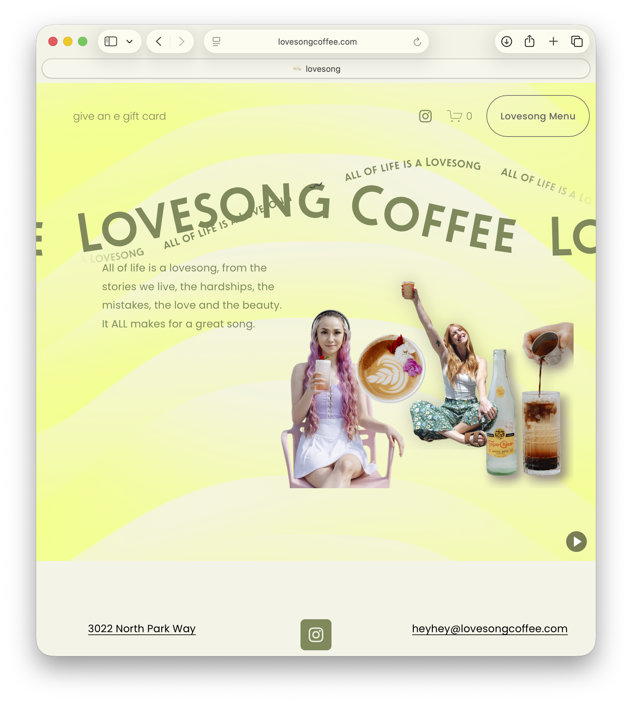
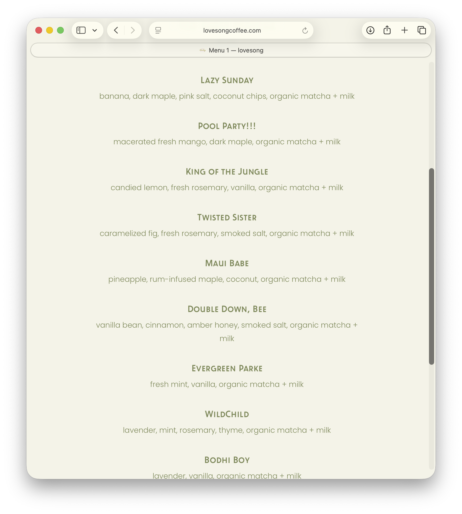
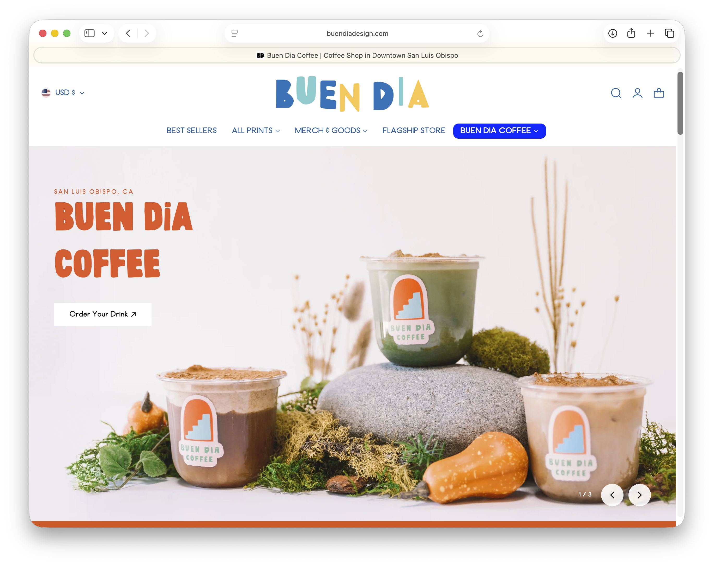
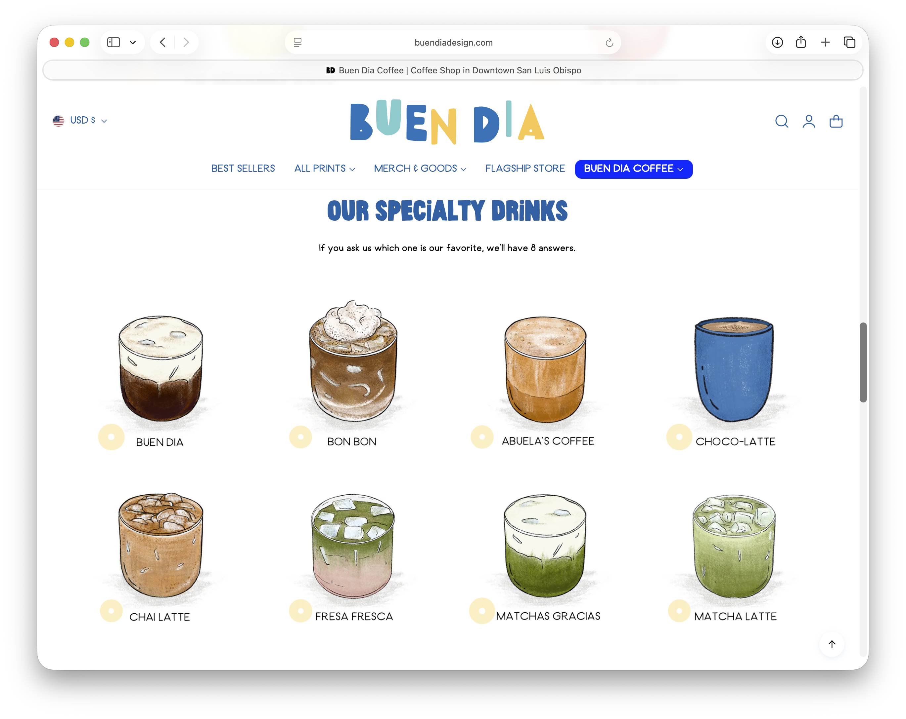
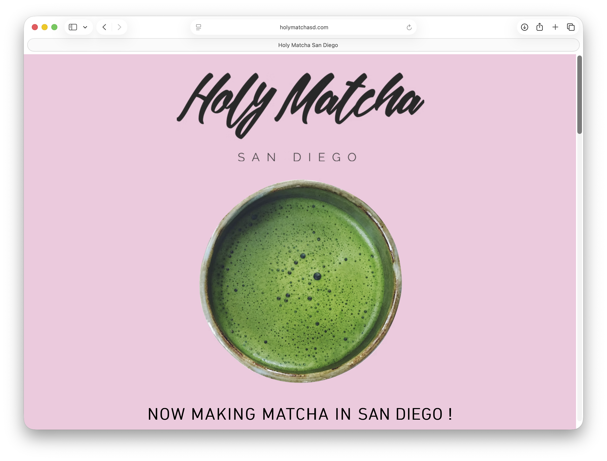
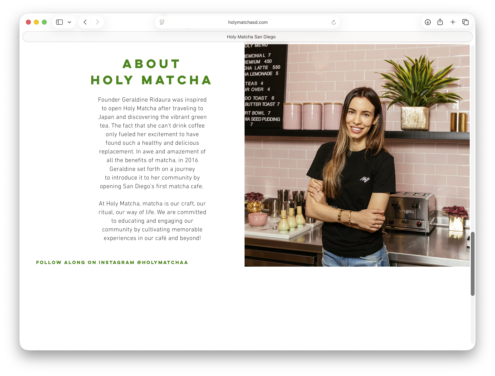

SLODOWN Matcha Café & Lounge
A small matcha-focused lounge in downtown San Luis Obispo. Colorful yet calm, this café is the perfect place to take a breather and recharge.
SLODOWN is for the young, busy student or professional who wants to take a second. Located close to SLO Transit's main stop, students and transit users who want a break from the hustle and bustle can easily come in for a drink and a breath.
Guests at SLODOWN are looking for a place to have a delicious drink while relaxing after a busy day enjoying San Luis Obispo. They are also free to study or work, but no stress allowed.


Buen Dia's website. They specialize in both merchandise and drinks.




Welcome to SLODOWN! So glad to have you. Take a deep breath, check out our menu, and feel free to stay as long as you like.
[image of three matchas with various toppings on a light blue table]
Check out our [link to menu] menu to know what to order. If you want to know more about us, the [link to about] about will tell you everything. Check the [link to visit us] visit us page to know where to go.
Classic: a matcha latte with your choice of milk, sweetened or unsweetened. $5.
Strawberry: a matcha latte with your choice of milk, swetened with strawberry syrup and cold foam. $6.
Warm: a matcha latte with your choice of milk, sweetened with s'mores syrup. $6.
Double: an extra-strong matcha latte with your choice of milk, sweetened or unsweetened. $6.
Outdoor: a matcha latte with your choice of milk, featuring citrus and lavender syrup. $5.
Nutty: a matcha latte with your choice of milk, sweetened with hazelnut syrup. $5.
Matcha Lemonade: go Mustangs. $6.
Lemonade: refreshing. $3.
All menu items feature an image of the drink.
[image of founders with caption including their names and positions]
SLODOWN was founded by three Cal Poly alumni trying to contribute to the community. The name was inspired by the meditative nature of making the tea, and it influenced how we built our business. We wanted to build a comforting, well thought-out space easily accesible by public transit. We love matcha!
[image of the exterior of SLODOWN]
We are located at 979 Osos Street in San Luis Obispo, CA. We are easily accesible by all SLO Transit routes because of our proximity to the Transit Center.
Call us: (805) 555-5555.
Message us: hello@slodown.com